Giveplug is a mobile-focused fundraising platform built to fix what GoFundMe and Kickstarter were getting wrong on phones — cluttered interfaces, weak emotional storytelling, and clunky campaign setup. Three months of research, branding, and UI to take a campaign from idea to first donation in minutes.
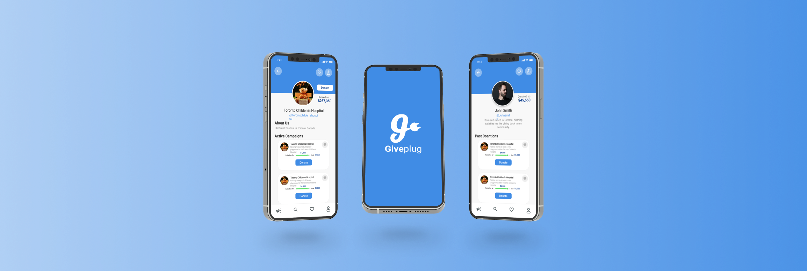
01 — Overview
Giveplug’s thesis was that fundraising was a connection problem dressed up as a payments problem. Donors don’t fail to give because checkout is hard — they fail to give because they never feel connected to the campaign. The brand mark, a lowercase ‘g’ shaped like a wall plug, made that thesis literal: plug a donor into a campaign and the rest takes care of itself.
Build a mobile-first fundraising app that addresses the limitations of GoFundMe, Kickstarter, and Indiegogo. The goal: an intuitive product that empowers people to start, manage, and promote their own campaigns with as little friction as possible.
Scope covered user research, UX/UI design, branding, prototyping, and usability testing — the full design surface for a v1 launch.
Existing platforms were built desktop-first and squeezed onto phones. Setup flows were long and intimidating. Campaigns competed for attention with platform chrome — donate buttons fought for space with sidebars, badges, and recommended-campaigns rails.
The opportunity was a streamlined, visually engaging, mobile-native fundraising platform that treated each campaign as the hero, not as a row in a feed.
02 — The Problem
User interviews with campaign creators and donors, plus a deep audit of the dominant platforms, surfaced three pain points that came up over and over. Solving any one of them would have made a meaningful product. Solving all three was the bar.
PROBLEM 01
Setup flows had too many steps; donation flows had too many distractions. Users described the experience as “confusing” and “overwhelming” — especially on mobile, where every extra UI element ate into the campaign content.
PROBLEM 02
Most platforms were a desktop site with a thinner sidebar. Tap targets were small, forms were long, and the share moment — the most important social action in fundraising — was buried behind two more taps.
PROBLEM 03
Visual design and storytelling were afterthoughts. Campaigns leaned on text walls and stock imagery, which made it harder for donors to feel anything before being asked to give. The emotional “why” was missing.
The Goal
A streamlined, visually engaging, mobile-optimized fundraising platform that puts the campaign — and the story behind it — at the centre of every screen. Everything else gets out of the way.
03 — Research
Two research streams. Talking to people who had run real fundraising campaigns — what worked, what didn’t, what they wished existed. Then auditing GoFundMe, Kickstarter, and Indiegogo for what to avoid. The patterns from both streams fed into a single mind map of the design space.
Conversations with campaign creators and active donors. The recurring complaint from creators was that setup felt like filing taxes. The recurring complaint from donors was that they couldn’t tell which campaigns were trustworthy.
That second complaint became a design constraint — trust signals had to be obvious without being cluttered.
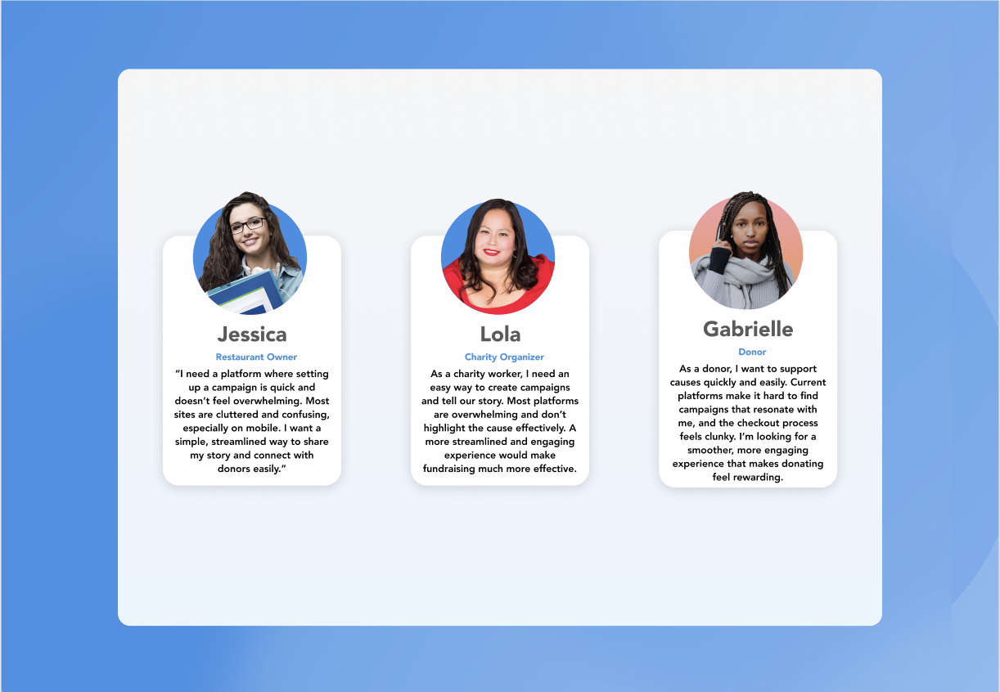
Feature-by-feature audit of GoFundMe, Kickstarter, and Indiegogo. Scored on UX, design aesthetic, mobile experience, social sharing, and campaign-creation friction.
None of them were terrible. All of them were beatable on mobile.
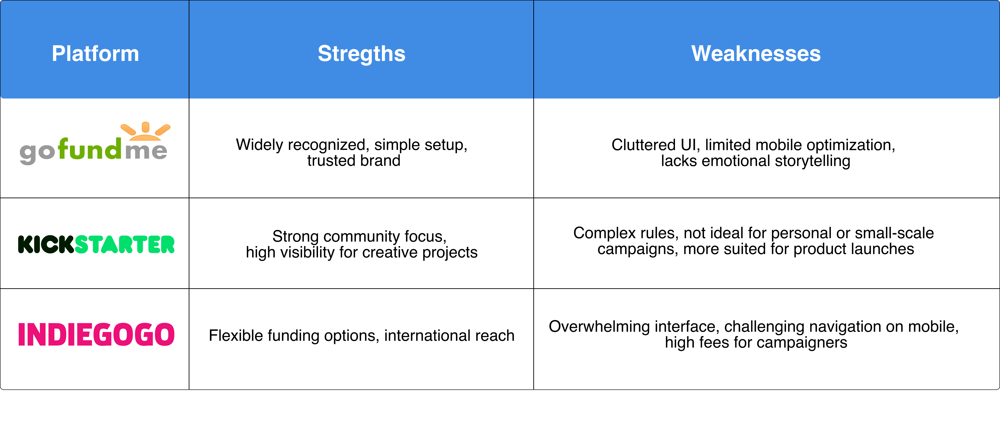
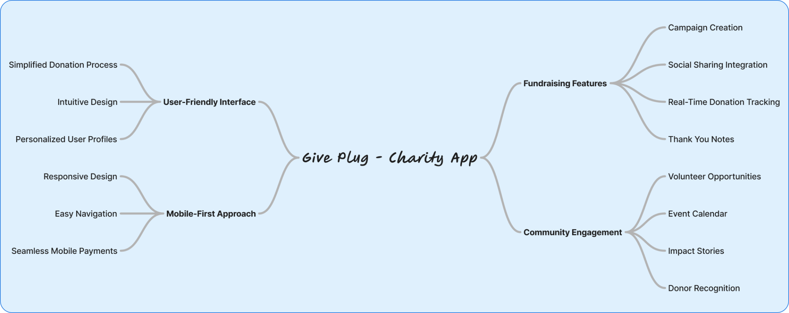
04 — User Flow
End-to-end navigation from the moment someone downloads the app to the moment they close their campaign. Mapping the flow first surfaced the redundant steps GoFundMe had baked in — and let me cut them before they made it into wireframes.
User flow rebuilt for this case study from the original 2020 mapping.
05 — Wireframes
Five low-fidelity screens locked the structure before pixel-level decisions: sign in, account-type picker, returning sign-in, sign up, and the campaign feed where the actual fundraising lives. Wireframes covered the rest of the product as well, but these five carry the onboarding story.
01 — Sign in
02 — Welcome
03 — Returning
04 — Sign up
05 — Campaigns
Wireframes redrawn for this case study to walk through the onboarding flow as designed.
06 — Brand
The logo had to do one job: signal connection. A lowercase ‘g’ with a wall plug at its tail says “plug into a cause” without anyone needing to read the brand book to get it. Friendly, mark-led, and short enough to work as an app icon at 24px.
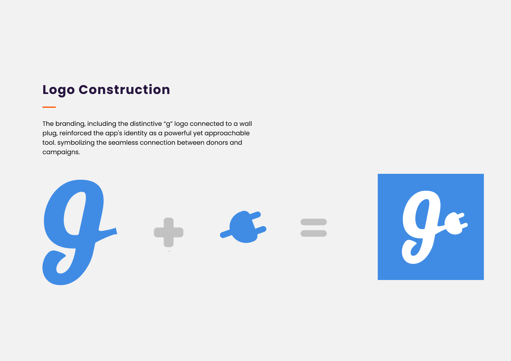
A vibrant, friendly palette that reads as positive without sliding into corporate blandness. Typography chosen for readability on small screens first — this app would live in pockets, not on desks.
The system was designed to scale to social-share assets, in-app illustrations, and the marketing site without rebuilding the brand twice.
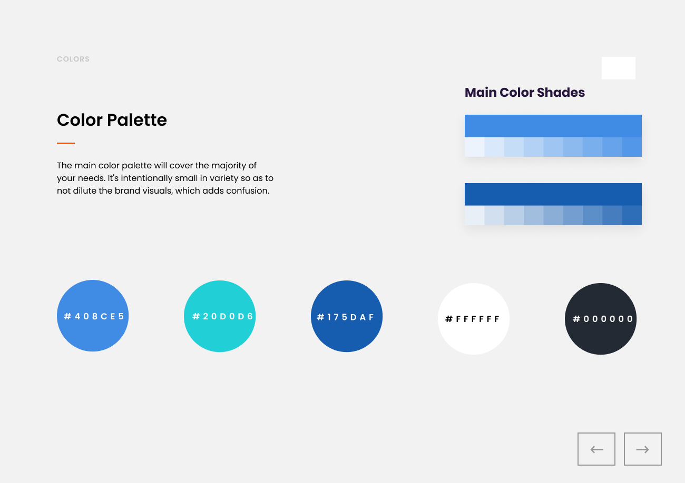
07 — UI Design
High-fidelity UI built around three rules: campaign content gets the most space on every screen, donation actions are always one tap from anywhere, and the visual hierarchy answers the donor’s question before they ask it — what is this campaign, who is it for, and how much do they need.
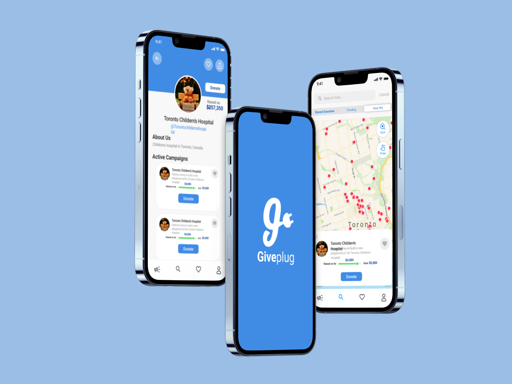
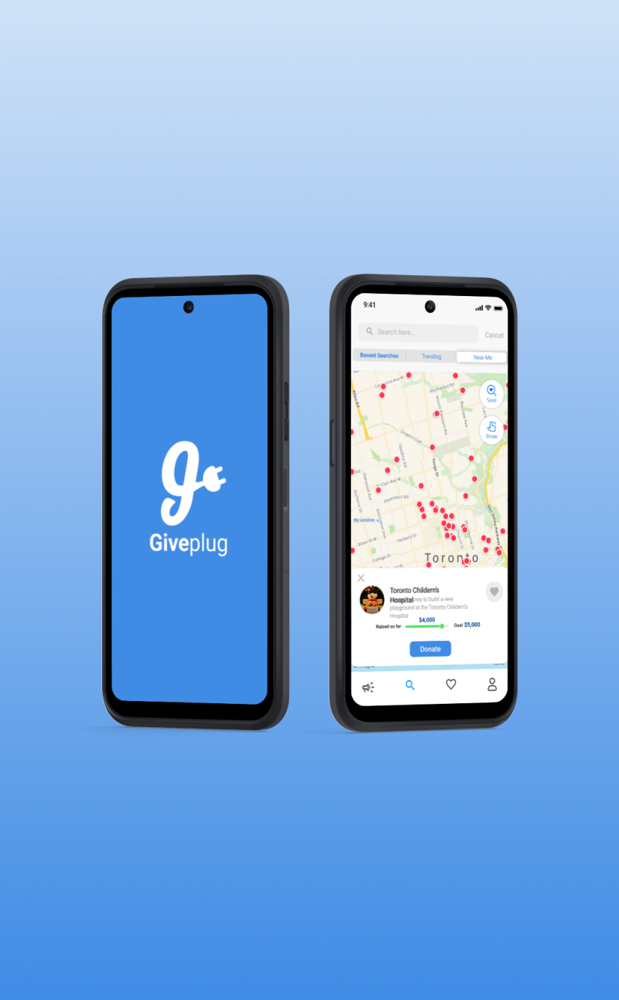
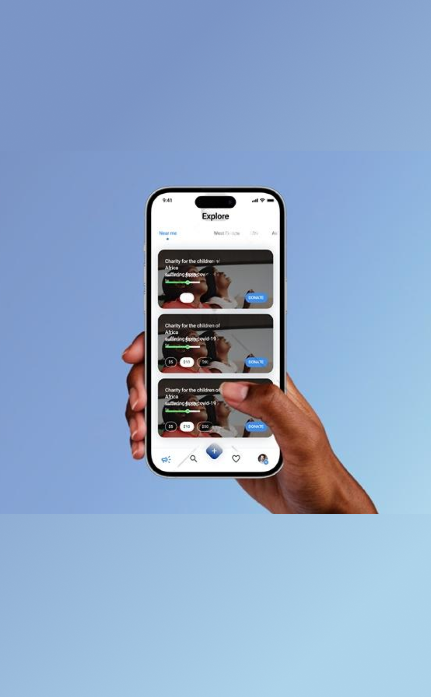
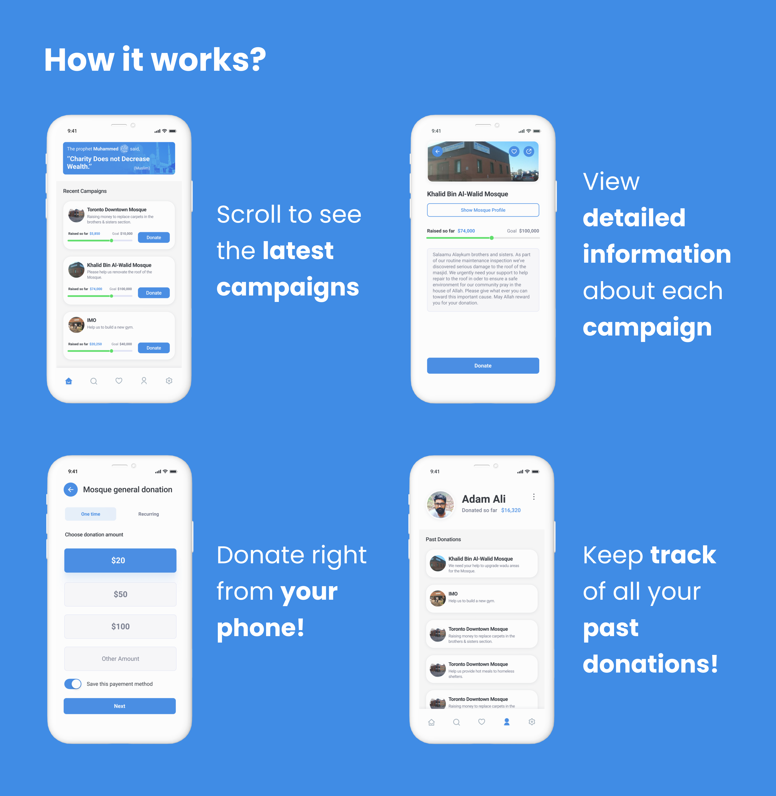
01
A step-by-step launcher that splits the GoFundMe-style monolithic form into four short steps with progress feedback. Most users get from idea to live campaign in under five minutes — the same flow on GoFundMe was 15+ steps and frequently abandoned.
02
Sharing isn’t a settings page — it’s the second screen after creation. Pre-formatted share cards for Instagram stories, Twitter/X, and WhatsApp, because that’s where personal-network fundraising actually lives in 2020.
03
Large hero images on every campaign card. Generous whitespace. Type sized for thumb-reading. Designed so the donor sees the story before they see the donate button — because a campaign that earns the read earns the donation.
08 — Launch & Impact
The launch plan was deliberately quiet. A beta cohort of real campaigns tested the flow before any marketing spend went out. The strategy: prove the design works on small numbers, then turn on acquisition.
Soft launch to a beta group, refine based on what broke, then a public launch supported by influencer partnerships and targeted ads. Webinars and Q&A sessions to show prospective campaign creators how Giveplug compared to what they were already using.
Community engagement was the acquisition strategy. Paid ads were the amplifier, not the primary channel.
5,000 sign-ups in month one, driven by ease-of-use and the visual differentiation against GoFundMe. High social-share rates as the leading indicator that the design was doing its job — if campaigns were getting shared, donations would follow.
Repeat campaign creators were the long-term metric. One-time users mean a tool. Repeat users mean a habit.
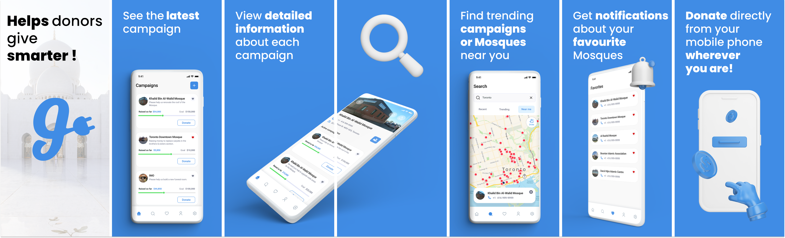
09 — Takeaway
Giveplug shipped, then was rebranded as GiveUmmah — a donation-based crowdfunding platform for Indian Muslims. The team I worked with kept the entire UI and flow; the only changes were the logo and the target audience. Same screens, same patterns, different brand on the front.
What I’d carry forward
Good UI design isn’t audience-specific the way brand identity is. If the underlying flow respects the user’s time and the screens earn attention before asking for it, the design can survive a pivot. Giveplug was designed for Western general-purpose fundraising; GiveUmmah used the same screens for Indian Muslim crowdfunding without redesigning them. The flows weren’t culturally specific — they were just well-shaped.